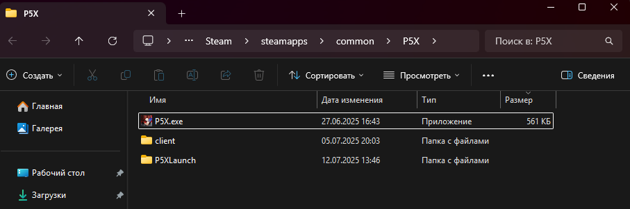
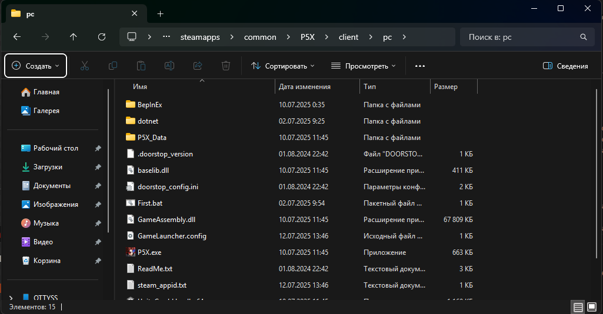
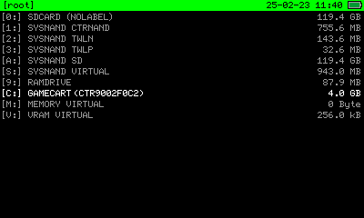
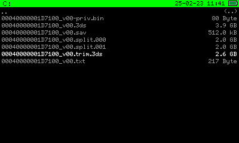
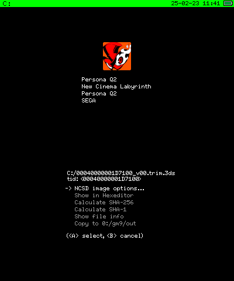
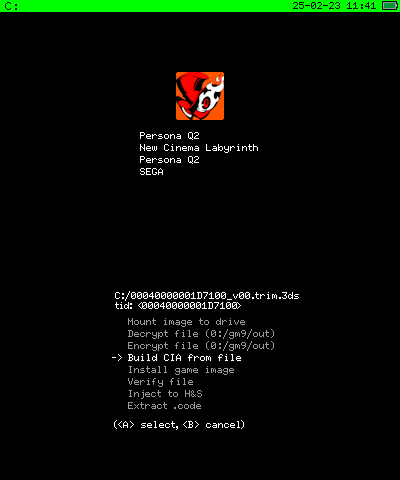
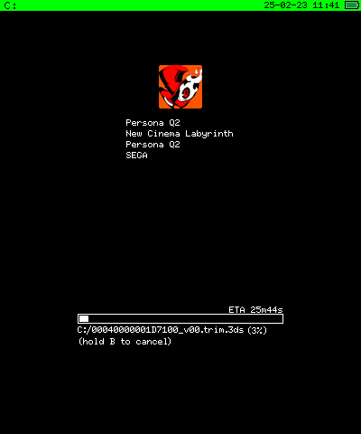
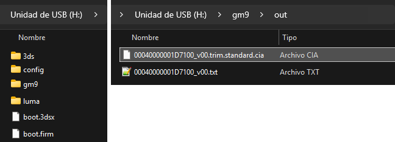
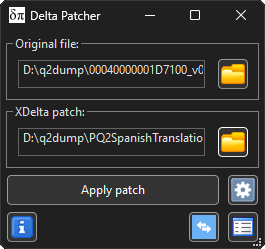

<!DOCTYPE html>
<html lang="ru">

<head>
    <meta charset="UTF-8">
    <meta name="viewport" content="width=device-width, initial-scale=1, viewport-fit=cover">
    <title>P5X Русификатор</title>
    <link rel="icon" href="P5X_logo_light.png">
    <meta name="theme-color" content="#141414">
    <meta name="description"
        content="Русификатор Persona 5X">

    <script src="deps/jquery-3.6.4.min.js"></script>
    <link rel="stylesheet" href="deps/bootstrap/css/bootstrap.min.css">
    <link rel="stylesheet" href="assets/css/common.css">
    <link rel="stylesheet" href="P5X/guide/style.css">
    <script src="assets/js/common.js"></script>
</head>

    <header id="header"><div class="headerWrap" id="headerItem">
        
            <div class="headerBox">
                <link rel="stylesheet" href="./P5X/common.min.css">
                    <h1 class="headerLogo">
                        <a href="https://ots.ottyss.ru/">
                            
                        </a>
                        </h1>
            </div>
                
                <nav>
                    <div class="pcNavBox">

                        <ul class="pcNavList">
                            
                            <li class="pcNavItem is-news">
                                <a class="pageLinks" onclick="change_guide('instalacion'); return false;">
                                    
                                </a>
                            </li>
                            
                            <li class="pcNavItem is-chara">
                                <a class="pageLinks" onclick="change_guide('extras'); return false;">
                                    
                                </a>
                            </li>
                            
                            <li class="pcNavItem is-school">
                                <a class="pageLinks" onclick="change_guide('faq'); return false;">
                                    
                                </a>
                            </li>
                        </ul>
                    </div>
                </nav>
    </header>

<body class="bg-black bg_bg">
    
    
            <div class="video-container">
                <video autoplay loop muted playsinline class="background-video" preload="auto" poster="P5X/img/logo/P5X_logo_light.png">
                    <source src="P5X/img/logo/P5Xtr.webm" type="video/webm">
                </video>
            </div>

        <div class="row container mx-auto">
    
                <div class="container mt-2 p-4 bg_container mx-auto">
                    <div id="guide-content"></div>
                    <p class="javascript-disabled"></p>
                </div>


        <div class="credits-container mt-3 p-4 bg_container mx-auto">
        </div>
    </div>
    <script>
        // hide class for JS is disabled message
        const javascriptDisabledMessage = document.querySelector('.javascript-disabled');
        javascriptDisabledMessage.classList.add('d-none');
        //
        const creditsContainer = document.querySelector('.credits-container');

        function change_guide(guide, subsection = null) {
            let content = '';
            switch (guide) {
                case 'instalacion':
                    content = `
                        <h2 class="title3 text-break">Руководство по установке</h2>
                        <section class="mt-4">

                        <div class="text-start fw-bold">Шаг 1:</div>
                        <p class="text-start">
                            Скачиваем драйверные файлы
                        </p>
                            <a href="https://dotnet.microsoft.com/en-us/download/dotnet" target="_blank" class="btn btn-primary1 mt-2 border-5">Dotnet(или latest, или 10.0) <svg xmlns="http://www.w3.org/2000/svg" width="58" height="50" viewBox="0 0 24 24"><path fill="currentColor" d="m12 16l-5-5l1.4-1.45l2.6 2.6V4h2v8.15l2.6-2.6L17 11zm-8 4v-5h2v3h12v-3h2v5z"/></svg></a>
                        <a href="https://github.com/abbodi1406/vcredist/releases/latest" target="_blank" class="btn btn-primary1 mt-2 border-5">Vcredist(.exe под вашу версию Windows) <svg xmlns="http://www.w3.org/2000/svg" width="58" height="50" viewBox="0 0 24 24"><path fill="currentColor" d="m12 16l-5-5l1.4-1.45l2.6 2.6V4h2v8.15l2.6-2.6L17 11zm-8 4v-5h2v3h12v-3h2v5z"/></svg></a>
                            <hr>
                        <div class="text-start fw-bold mt-3">Шаг 2:</div>
                        <p class="text-start">
                            Далее скачиваете архив с GitHub (Вам нужен main.zip)
                            <a href="https://github.com/OTTYSS/P5X-Russian-translate/releases" target="_blank" class="btn btn-primary1 mt-2 border-5">GitHub <svg xmlns="http://www.w3.org/2000/svg" width="24" height="50" viewBox="0 0 24 24"><path fill="currentColor" d="m12 16l-5-5l1.4-1.45l2.6 2.6V4h2v8.15l2.6-2.6L17 11zm-8 4v-5h2v3h12v-3h2v5z"/></svg></a>
                        </p>
                         <hr>
                        <div class="text-start fw-bold mt-3">Шаг 3:</div>
                        <p class="text-start">
                        Если у вас Steam-версия игры, вы заходите в свою библиотеку игр, находите игру, нажимаете по ней правой клавишей мыши -> управление - > показать локальные файлы. Откроется папка с игрой. 
                        <li>Если же у вас Launcher версия игры с сайта, найдите сами куда скачали игру и откройте папку где лежит P5X.exe.</li>
                        <br><br>
                        </p>
                        <hr>
                        <div class="text-start fw-bold mt-3">Шаг 4:</div>
                        <ul class="text-start">
                            <li>Теперь вы идете по пути <code>client</code><code>/</code><code>pc</code>: поместите файлы из архива в эту папку.
                        </ul>  
                        
                           <hr>
                        <div class="text-start fw-bold mt-3">Шаг 5:</div>
                        <ul class="text-start">
                           Данный шаг не обязателен, но настоятельно рекомендуется.
                           <br>
                           Т.к из-за батника при скачивании писалось, что там ВИРУСЫ, делаем следующее. Идём по пути <code>P5X</code><code>/</code><code>client</code><code>/</code><code>pc</code><code>/</code><code>BepInEx</code><code>/</code><code>plugins</code> и тут запускаем <code>P5XDL.exe</code> - У вас скачается актуальная версия перевода (дальше перевод будет автоматически проверять обновления при запуске игры)

                            </section>
                    `;
                    creditsContainer.style.display = 'block';
                    break;
                case 'extras':
                    content = `
                        <h2 class='title3'>Дополнительно</h2>
                        <h4 class="mb-3 text-uppercase fw-bold"></h4>
                        <hr>
                        <section class="mt-4" id="pqpatches">
                        <h2 class="title2">Тут что-то будет</h2>
                        </section>
                    `;
                    creditsContainer.style.display = 'none';
                    break;
                case 'faq':
                    content = `<h2 class='title3 text-break'>FAQ <br></h2>
                    <h2 class="title1">Как я могу сообщить об ошибке?</h2>
                    <p class="fs-6">
                        Вы можете связаться со мной написав в комментариях <a href="https://t.me/otspq" target="_blank" class="text-decoration-none link-color">здесь</a>.
                    </p>
                    <hr>

                    <h2 class="title3 text-break" id="errores-conocidos">Известные ошибки</h2>
                    <ul>
                        <li>
                        <h2 class="title1">Имена персонажей в диалогах не переведены</h2>
                        <p class="fs-6">Это связано с тем что игра выводит имена в формате буква в строчке. Если это фиксить, то сломается большинство интерфейса</p>
                        <br> 
                        <li>
                        <h2 class="title1">Иногда встречаются английские/японские символы</h2>
                        <p class="fs-6">Напишите в тг канал или руководство в стиме с скриншотом места.</p>
                        <br>
                        <h2 class="title1">При запуске появилась ошибка .NET</h2>
                        <p class="fs-6">Если при запуске игры вам выдало ошибку .NET приложения обновления перевода, переустановите русификатор</p>
                        <p class="fs-6"> Или в папке P5X\client\pc\BepInEx\plugins открываем файл P5XDL.dll.config и в 7 строке в цифры пишем что-то своё например 1, сохраняем, запускаем P5XDL.exe. Перевод перекачается по новой</p>
                    </ul>
                    `;
                    creditsContainer.style.display = 'none';
                    break;
            }
            document.getElementById('guide-content').innerHTML = content;

            // slider
            // Función para inicializar un comparador
            function initComparator(comparator) {
                const afterImage = comparator.querySelector('.image-after');
                const slider = comparator.querySelector('.slider');

                let isDragging = false;

                // Restaurar la posición del slider si existe
                const savedPosition = comparator.getAttribute('data-slider-position');
                if (savedPosition) {
                    afterImage.style.clipPath = `inset(0 0 0 ${savedPosition}%)`;
                    slider.style.left = `${savedPosition}%`;
                }

                // Función para actualizar la posición del slider
                function updateSliderPosition(clientX) {
                    const rect = comparator.getBoundingClientRect();
                    let xPosition = clientX - rect.left;
                    let percentage = (xPosition / rect.width) * 100;

                    // Limitar entre 0 y 100
                    percentage = Math.max(0, Math.min(percentage, 100));

                    // Actualizar el clip-path y la posición del slider
                    afterImage.style.clipPath = `inset(0 0 0 ${percentage}%)`;
                    slider.style.left = `${percentage}%`;

                    // Guardar la posición actual del slider
                    comparator.setAttribute('data-slider-position', percentage);
                }

                // Eventos de ratón
                slider.addEventListener('mousedown', (e) => {
                    isDragging = true;
                    e.preventDefault(); // Evita que se seleccione el contenido
                });

                document.addEventListener('mousemove', (e) => {
                    if (isDragging) updateSliderPosition(e.clientX);
                });

                document.addEventListener('mouseup', () => {
                    isDragging = false;
                });

                // Eventos táctiles (móviles)
                slider.addEventListener('touchstart', (e) => {
                    isDragging = true;
                    e.preventDefault(); // Evita el desplazamiento de la pantalla
                });

                document.addEventListener('touchmove', (e) => {
                    if (isDragging) {
                        updateSliderPosition(e.touches[0].clientX);
                    }
                });

                document.addEventListener('touchend', () => {
                    isDragging = false;
                });
            }

            // Inicializar los comparadores
            const comparators = document.querySelectorAll('.image-comparator');
            comparators.forEach(comparator => {
                initComparator(comparator);
            });

            // Guardar el estado del slider antes de colapsar el acordeón
            document.querySelectorAll('.accordion-button').forEach(button => {
                button.addEventListener('click', () => {
                    const collapse = button.closest('.accordion-item').querySelector('.accordion-collapse');
                    if (collapse.classList.contains('show')) {
                        // Guardar el estado del slider antes de colapsar
                        const comparator = collapse.querySelector('.image-comparator');
                        if (comparator) {
                            const sliderPosition = comparator.querySelector('.slider').style.left;
                            comparator.setAttribute('data-slider-position', parseFloat(sliderPosition));
                        }
                    }
                });
            });
            // slider


            // Actualizar el hash con la sección y subsección
            if (subsection) {
                window.location.hash = `#${guide}&section=${subsection}`;
            } else {
                window.location.hash = `#${guide}`;
            }

            // Desplazarse a la subsección después de cargar el contenido
            if (subsection) {
                setTimeout(() => {
                    const element = document.getElementById(subsection);
                    if (element) {
                        element.scrollIntoView({ behavior: 'smooth' });
                    }
                }, 100);
            }

            // Actualizar el estado de los botones
            const buttons = document.querySelectorAll('.btn-guide');
            buttons.forEach(button => {
                if (button.id === `guide-${guide}`) {
                    button.classList.remove('disabled-guide');
                } else {
                    button.classList.add('disabled-guide');
                }
            });

            // Actualizar el estado de los botones
            const buttons2 = document.querySelectorAll('.btn-guide-mobile');
            buttons2.forEach(button => {
                if (button.id === `guide-${guide}`) {
                    button.classList.remove('disabled-guide');
                } else {
                    button.classList.add('disabled-guide');
                }
            });

            if (guide == 'extras' || guide == 'faq') {
                localStorage.removeItem('selectedDevice');
                localStorage.removeItem('selectedMethod');
                // console.log('Removed saved device and method');
            }
        }

        function loadSectionFromHash() {
            const hash = window.location.hash.substring(1);
            const parts = hash.split('&');
            let guide = parts[0];
            let subsection = null;

            // Si no hay hash, establecer guía por defecto
            if (!guide) {
                guide = 'instalacion';
            }

            // Extraer subsección si existe
            if (parts.length > 1) {
                const sectionParam = parts.find(part => part.startsWith('section='));
                if (sectionParam) {
                    subsection = sectionParam.split('=')[1];
                }
            }

            if (['instalacion', 'extras', 'faq'].includes(guide)) {
                change_guide(guide, subsection);
            }

            const savedDevice = localStorage.getItem('selectedDevice');
            const savedMethod = localStorage.getItem('selectedMethod');

            if (guide !== 'extras' || guide !== 'faq' || guide == null) {
                if (savedMethod == 'parcheo') {
                    document.getElementById('patchrom_btn').click();
                }
            }

            if (savedDevice) {
                if (guide !== 'extras' || guide !== 'faq' || guide == null) {
                    //setTimeout(() => {
                    document.getElementById('layerfs_btn').click(); // Activar botón de LayerFS

                    // console.log('Loaded selected device:', savedDevice);
                    document.querySelector(`.btn-${savedDevice}`).click(); // Activar botón de dispositivo guardado
                    //}, 100);
                }
            }
        }

        $(document).ready(function () {
            // Cargar sección al inicio
            loadSectionFromHash();

            // Escuchar cambios en el hash (navegación manual o con botones atrás/adelante)
            $(window).on('hashchange', function () {
                loadSectionFromHash();
            });
        });

        let activeMethod = null;

        function change_method(method) {

            // disable method if already active
            if (activeMethod === method) {
                //console.log('esto se ejecuta');
                document.getElementById('method-content').innerHTML = '<p>Выберите метод установки для продолжения.</p>';
                document.getElementById('patchrom_btn').classList.remove('active-btn');
                document.getElementById('layerfs_btn').classList.remove('active-btn');
                activeMethod = null;
                // delete saved device/method from local storage
                localStorage.removeItem('selectedDevice');
                localStorage.removeItem('selectedMethod');
                return;
            }

            activeMethod = method;

            let content = '';
            if (method === 'layerfs') {
                localStorage.removeItem('selectedMethod');
                document.getElementById('layerfs_btn').classList.add('active-btn');
                document.getElementById('patchrom_btn').classList.remove('active-btn');
                content = `
                    <h2 class='text-center'>LayerFS</h2>
                    <div class="text-start fw-bold">Шаг 1:</div>
                    <p class="text-start">Скачайте патч перевода в формате <a class="pink-text text-decoration-none">LayerFS (mod.cpk)</a>.</p>
                    <hr>
                    <div class="text-start fw-bold">Шаг 2:</div>
                    <p class="text-start">Скачайте <a class="text-decoration-none text-white" href="#" onclick="change_guide('extras'); setTimeout(function(){ document.getElementById('pqpatches').scrollIntoView({ behavior: 'smooth' }); }, 300); return false;"><b>PQ Patches</b></a> (<code>code.bin</code> и <code>exheader.bin</code>), чтобы загрузить перевод из <a class="pink-text text-decoration-none">mod.cpk</a> в разделе <a class="text-decoration-none link-color" href="#" onclick="change_guide('extras'); setTimeout(function(){ document.getElementById('pqpatches').scrollIntoView({ behavior: 'smooth' }); }, 300); return false;">Дополнительно</a>.</p>
                    <div class='text-center my-3'>
                        <div class='row'>
                            <div class='col-lg-4'>
                                <button class='btn btn-console btn-design w-100' onclick='change_device("console")'>Консоль (<span class="red-text">2</span>DS/<span class="red-text">3</span>DS)</button>
                                <br class="hide-desktop2"><br class="hide-desktop2">
                            </div>
                            <div class='col-lg-4'>
                                <button class='btn btn-android btn-design w-100' onclick='change_device("android")'>Android</button>
                                <br class="hide-desktop2"><br class="hide-desktop2">
                            </div>
                            <div class='col-lg-4'>
                                <button class='btn btn-pc btn-design w-100' onclick='change_device("pc")'>PC</button>
                            </div>
                        </div>
                    </div>
                    <div id='content-device' class='p-3'>
                        <p>Выберите метод установки для продолжения.</p>
                    </div>
                `;
            } else if (method === 'parcheo') {
                localStorage.removeItem('selectedDevice');
                // console.log('set method:', method);
                localStorage.setItem('selectedMethod', 'parcheo');
                // console.log('Removed saved device');
                //
                document.getElementById('patchrom_btn').classList.add('active-btn');
                document.getElementById('layerfs_btn').classList.remove('active-btn');
                content = `<h2 class='text-center'>Патч Рома</h2>
                    <div class="text-start fw-bold">Шаг 1:</div>
                    <p class="text-start">Скачайте патч перевода в формате <a class="blue-text text-decoration-none">Патч (xdelta)</a>.</p>
                    <hr>
                    <div class="text-start fw-bold">Шаг 2:</div>
                    <p class="text-start">С выключенной консолью удерживайте кнопку <code class="console-btn">START</code> и включите её, чтобы попасть в меню <b>GodMode9</b>.</p>
                    <p class="text-start">В этом меню выберите картридж Persona Q<a class="orange-text text-decoration-none">2</a> "<b>GAMECART (CTR9002F0C2)</b>" и нажмите <code class="console-btn btn-a">A</code>.</p>
                    
                    <hr>
                    <div class="text-start fw-bold mt-3">Шаг 3:</div>
                    <p class="text-start mb-3">Выберите формат <b class="text-break">00040000001D7100_v00.trim.3ds</b> и нажмите <code class="console-btn btn-a">A</code>.</p>
                    
                    <hr>
                   <div class="text-start fw-bold mt-3">Шаг 4:</div>
                    <p class="text-start mb-3">Выберите <b>NCSD image options...</b></p>
                    
                    <hr>
                    <div class="text-start fw-bold mt-3">Шаг 5:</div>
                    <p class="text-start mb-3">Выберите <b>Build CIA from file</b>.</p>
                    
                    <hr>
                    <div class="text-start fw-bold mt-3">Шаг 6:</div>
                    <p class="text-start mb-3">Подождите, пока процесс завершится, и нажмите <code class="console-btn btn-a">A</code> для продолжения.</p>
                    
                    <hr>
                    <div class="text-start fw-bold mt-3">Шаг 7:</div>
                    <p class="text-start mb-3">Подключите вашу SD-карту к компьютеру и в папке <b>gm9/out</b> скопируйте файл <b class="text-break">00040000001D7100_v00.trim.standard.cia</b>.</p>

                    
                    <div class="text-start fw-bold mt-3">Шаг 8:</div>
                    <p class="text-start mb-3">Скачайте программу для применения патчей <b>xdelta</b>, например, <a href="https://www.romhacking.net/utilities/704/" target="_blank" class="text-decoration-none link-color">Delta Patcher</a>, чтобы применить уже скачанный <a class="blue-text text-decoration-none">патч</a>.</p>
                    <hr>
                    <div class="text-start fw-bold mt-3">Шаг 9:</div>
                    <p class="text-start mb-3">Откройте программу, выберите файл <b class="text-break">00040000001D7100_v00.trim.standard.cia</b> как <b>Оригинальный файл</b> и патч перевода как <b>XDelta патч</b>.</p>
                    
                    <hr>
                    <div class="text-start fw-bold mt-3">Шаг 10:</div>
                    <p class="text-start mb-3">Примените патч, и ваш оригинальный файл .cia будет заменен. Это будет ваша ROM с примененным переводом, готовая для установки на вашу консоль или эмулятор.</p>

                `;
            }
            document.getElementById('method-content').innerHTML = content;
        }

    </script>

    <footer class="footer mt-3 hide-desktop3">
        <div class="container mt-4">
            <div class="row mb-5">
                <div class="col-12 text-center">
                    <a class="logo-link" href="">
                        
                    </a>
                </div>
                <div class="col-md-4">
                    <br>
                </div>
                <div class="col-md-4 mt-3">
                    <p class="text-white text-center">Этот проект не связан с ATLUS или SEGA. 
                        Все права принадлежат их соответствующим владельцам.</p>
                </div>
            </div>
        </div>
    </footer>
    <footer class="footer mt-3 hide-mobile3">
        <div class="container mt-4">
            <div class="row mb-5">
                <div class="col-md-4">
                    <a class="logo-link w-25" href="">
                        
                    </a>
                </div>
                <div class="col-md-4">
                </div>
                <div class="col-md-4">
                    <p class="text-white text-center">Этот проект не связан с ATLUS или SEGA. 
                        Все права принадлежат их соответствующим владельцам.</p>
                </div>
            </div>
        </div>
    </footer>
    
    <script src="deps/bootstrap/js/bootstrap.bundle.min.js"></script>
    <script src="deps/iconify.min.js"></script>
</body>

</html>